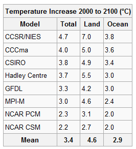
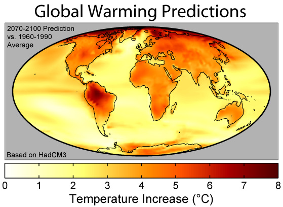
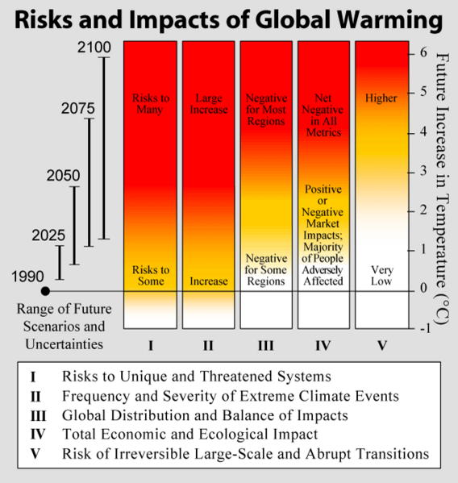

global temperatures
The Data Resource Center provides data tables, charts, and graphs of global temperature measurements and related records obtained through remote sensing, satellite images, and climate modeling. The Center will help you get started in researching the data you need to make informed decisions and recommendations in your final report to the International Panel on Climate Change.
Look carefully at the graphs and charts to analyze the data. Scientists gather and analyze data in order to draw valid conclusions. They find answers by studying objective data. Regardless of personal opinion or popular beliefs, scientists rely on precise data to lead them to correct answers and compelling solutions.
You will find many other sources of data in your research. Links to sites for information and data on global temperatures can be found in the Global Mean Temperatures Internet Resource section. These are some of many sites that provide reliable, scientific data. Make sure that your own sources are trustworthy, science-based sites; avoid sites sponsored by various interest groups that promote their potentially biased point of view.
Temperature Increase 2000 to 2100

This chart lists research centers, organizations, or laboratories which have conducted extensive global temperature studies. Their predicted inrease in global temperatures to the year 2100 are listed for both land and ocean environments. The data suggests land will warm more rapidly probably becasue of its lower specific heat.
Global Warming Predictions
The graph shows the predicted temperature change because of global climate change as issued by the Hadley Centre climate model. The colors show predicted average temperature changes for 2070-2100. Notice the distinct warming difference between land and water. The strong warming around the Arctic Ocean is related to melting sea ice, and the strong warming in South America is related to El Nino cycles. (Models differ according to variables considered.)
Risks and Impacts of Global Warming

This Intergovernmental Panel on Climate Change (IPCC) table of risks and impacts of global warming depicts an assessment of the relative impact and risks associated with global climate change. Five categories are assessed.The bars are color coded to show level of impact or concern for each factor as a function of temperature increase.

.png)